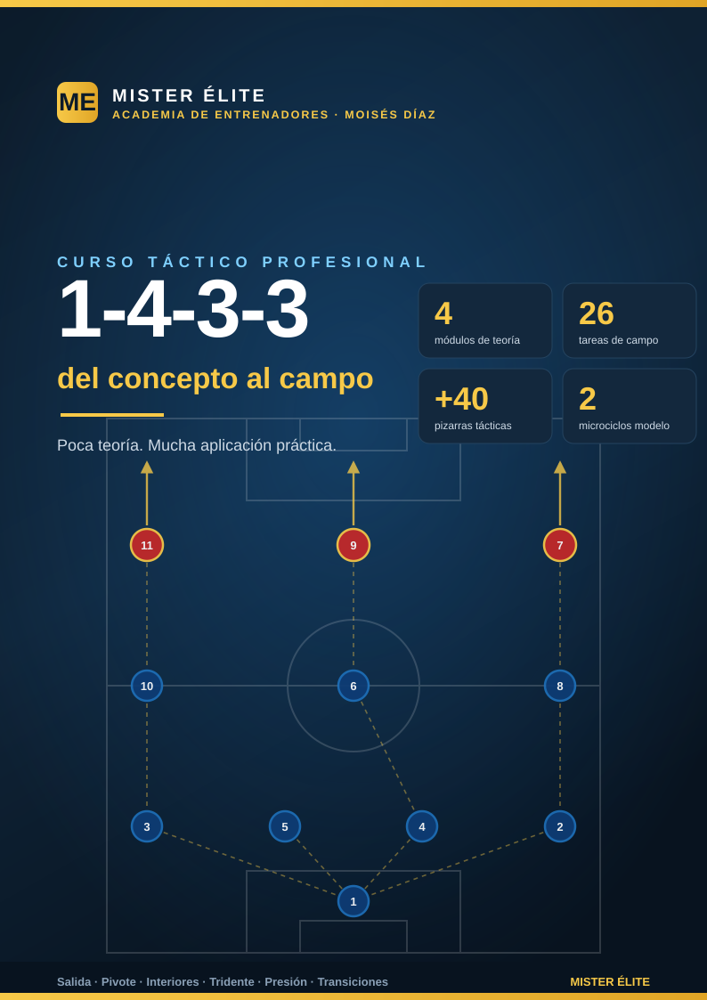

Sistema 1-4-3-3: del concepto al campo
Curso táctico — MISTER ÉLITE — Moisés Díaz
Filosofía del curso: poca teoría, mucha aplicación práctica. Cuatro módulos breves para entender el sistema y un banco de 26 tareas de campo para entrenarlo. Cada tarea y cada concepto teórico clave llevan su pizarra.
A quién va dirigido
Entrenadores de fútbol formativo, amateur y senior que quieren implantar el 1-4-3-3 (línea de 4 + mediocampo de 3 + tridente con extremos reales) con criterio moderno: salida construida, presión orientada del tridente, amplitud por bandas y transformación a estructuras de ataque/repliegue. No exige material especial: conos, petos, mini-porterías y balones.
Objetivos del curso
- Entender la estructura del 1-4-3-3 y sus transformaciones con balón (1-3-2-5 / 1-2-3-5) y sin balón (1-4-5-1 / 1-4-1-4-1).
- Dominar los roles por demarcación en las cuatro fases del juego.
- Aplicar la presión orientada del tridente con gatillos claros y coberturas.
- Resolver la salida ante 1 y 2 puntas (rombo y salida en 3).
- Explotar la amplitud del tridente y la llegada de los interiores al área.
- Decidir bien la transición (contrapressing vs repliegue) en 3-5 s.
- Llevar todo al campo con 26 tareas medibles y un plan de sesiones de ejemplo.
Cómo está organizado
- Módulos de teoría (
modulos/): concisos, cada uno termina con Ideas clave y Errores comunes. - Ejercicios (
ejercicios/): un archivo por bloque del banco, con fichas uniformes (Objetivo · Organización · Desarrollo · Provocaciones · Variantes · Coaching · Duración/Categoría) + un plan de 2 microciclos. - Gráficos (
graficos/): una pizarra por tarea (tarea-01..26.svg) y diagramas de teoría (teoria-NN-slug.svg). Índice engraficos/PEDIDOS.md.
Índice
Teoría
- Módulo 01 · Fundamentos y estructura
- Módulo 02 · Fase defensiva
- Módulo 03 · Fase ofensiva
- Módulo 04 · Transiciones y balón parado
Práctica
- Plan de sesiones (2 microciclos)
- Bloque 1 · Salida con 2 centrales + pivote (T1–T5)
- Bloque 2 · Mediocampo de 3 (T6–T9)
- Bloque 3 · Pressing del tridente + gatillos (T10–T13)
- Bloque 4 · Tridente y amplitud (T14–T18)
- Bloque 5 · Llegada e interiorización / finalización (T19–T22)
- Bloque 6 · Transiciones + partido condicionado (T23–T26)
Recursos
Convención de dorsales y posiciones
Estructura: portero + 4 defensas (2 centrales + 2 laterales) + mediocampo de 3 (1 pivote + 2 interiores) + tridente (2 extremos + 1 delantero). Esta nomenclatura es única en todo el curso (módulos, ejercicios y pizarras).
| Dorsal | Posición | Abrev. | Matiz de rol |
|---|---|---|---|
| 1 | Portero | POR | Portero-líbero, inicia el juego, cobertura a la espalda de la defensa |
| 2 | Lateral derecho | LD | Defiende el carril derecho y se proyecta dando amplitud |
| 3 | Lateral izquierdo | LI | Defiende el carril izquierdo y se proyecta dando amplitud |
| 4 | Central derecho | DFC | Marca/cobertura; saca el balón por su lado |
| 5 | Central izquierdo | DFC | Marca/cobertura; saca el balón por su lado |
| 6 | Mediocentro (pivote) | MC | Ancla del mediocampo, protege a la defensa, primera salida y equilibrio |
| 8 | Interior derecho | MC | Box-to-box: recibe entre líneas, conduce y llega al área |
| 10 | Interior izquierdo | MC | El más creativo: juega entre líneas, asocia y asiste |
| 7 | Extremo derecho | ED | Amplitud y desborde o pisar por dentro; ayuda al lateral en defensa |
| 9 | Delantero centro | DC | Referencia ofensiva: fija a los centrales, apoya y ataca el área |
| 11 | Extremo izquierdo | EI | Amplitud y desborde o pisar por dentro; ayuda al lateral en defensa |
Notas de nomenclatura: los laterales (LD/LI) dan la amplitud en ataque para que los extremos pisen por dentro. El mediocampo de 3 se orienta con vértice abajo ▽ (un pivote: 6 solo) o vértice arriba △ (doble pivote 6+8 y enganche 10). El 6 nunca abandona el eje sin cobertura. Defensivamente repliega a 1-4-5-1 / 1-4-1-4-1; con balón se transforma a 1-3-2-5 / 1-2-3-5. Usamos EI/ED (nunca "MI/MD"). En el plan de sesiones, MD = matchday (MD-4 … MD), nunca posición.
Distancias de referencia (estándar único del curso)
- Distancia entre líneas (vertical, línea a línea): 10–12 m — techo de referencia (defensa↔medio y medio↔ataque). Si se supera, aparece el espacio entre líneas que el sistema quiere proteger.
- Compactación vertical del bloque (primera a última línea): < 30–35 m.
- Anchura con balón: extremos pegados a la cal → ancho máximo de campo para estirar a la defensa rival.
- Triángulo del medio (interior–pivote–interior): lados de 8–12 m.
Leyenda de símbolos de las pizarras
| Símbolo | Significado |
|---|---|
| Círculo azul con dorsal | Jugador propio (own) |
| Círculo rojo con dorsal | Jugador rival |
| Círculo naranja | Jugador neutral / comodín |
| Círculo blanco pequeño | Balón |
| Flecha amarilla discontinua | Pase |
| Flecha blanca | Desplazamiento / carrera sin balón (run) |
| Flecha blanca ondulada | Conducción / regate (dribble) |
| Flecha celeste | Conducción de progresión (drive) |
| Línea roja | Bloqueo / corte real (block) |
| Zona sombreada amarilla | Zona de referencia (carril, trampa, área de trabajo) |
| Números 1-2-3 | Orden de la secuencia |
Pie de marca MISTER ÉLITE — Moisés Díaz en cada pizarra.
Glosario
- Pivote (6): mediocentro ancla por delante de la defensa; bisagra entre fases.
- Interiores (8/10): mediocentros de los medio-espacios; reciben entre líneas y llegan al área.
- Tridente: los tres de arriba (ED 7 · DC 9 · EI 11).
- Medio-espacio / semiespacio: carril intermedio entre banda y centro.
- Cinco carriles: banda izq · semiespacio izq · centro · semiespacio der · banda der.
- Vértice abajo (▽): un pivote (6 solo, interiores adelantados).
- Vértice arriba (△): doble pivote (6+8) + enganche (10); el "4-3-3 falso".
- 1-3-2-5 / 1-2-3-5: estructuras de ataque con cinco hombres en la última línea.
- 1-4-5-1 / 1-4-1-4-1: estructuras de repliegue (extremos a la línea de medios).
- Gatillo (trigger): señal visual que dispara la presión (p. ej. balón al lateral rival).
- Contrapressing: presión inmediata tras la pérdida (ventana de 3-5 s).
- Basculación: desplazamiento del bloque hacia el lado del balón.
- Tercer hombre: A juega a B (presionado) y B descarga a C que llega libre.
- Desdoble (overlap): el lateral sobrepasa al extremo por fuera; underlap = por dentro.
- Salida lavolpiana: salida en 3 con el pivote bajando entre los centrales.
- xG: goles esperados (calidad de ocasión).
- MD (matchday): referencia temporal del microciclo respecto al partido (MD-4 … MD).
- Categoría de carga: F = fundamentación · A = activación/específica · S = subprincipio competitivo.